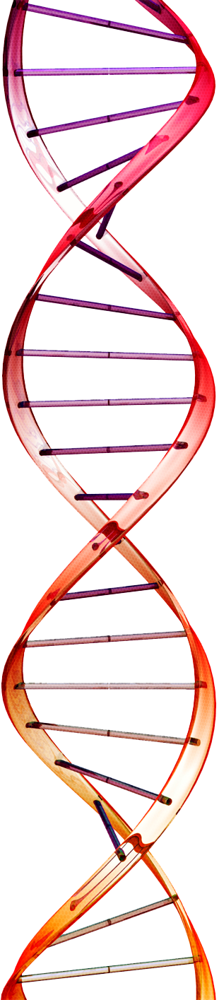
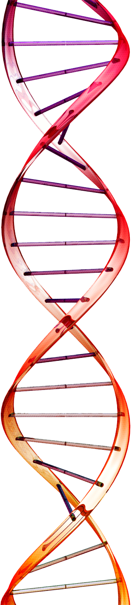

DNA nanotechnology has demonstrated that chemotherapeutics can be integrated into DNA origami nanostructures, which can circumvent drug resistance mechanisms and enter the cell via endocytosis.1 DNA origami is a self-assembly process in which a long “scaffold” strand of DNA “folds” into a 3D nanostructure via synthetic DNA oligonucleotides, or “staples”, pinching together different sections of the scaffold.2 Before DNA origami can be used in clinical trials, we need a better understanding of DNA origami stability. We performed stability analysis of various DNA origami nanostructures in physiological conditions and investigate their ability to retain chemotherapeutics such as daunorubicin. DNA nanostructures with varying design parameters such as surface area, cross section, and lattice type were selected to observe structure degradation in environments of varying salt (MgCl2) and fetal bovine serum (FBS) concentrations. We quantified stability through gel electrophoresis and qualitatively through electron microscopy. We used a UV spectrophotometer to measure daunorubicin concentration in DNA nanostructures at different time points at physiological temperatures to determine base pair binding ratio and TEM imaging to observe intercalation. Preliminary results indicate that most nanostructures degrade between 3 nM and 1 nM MgCl2 concentration and nanostructures with a square lattice are stable at all FBS concentrations. This suggests high stability in cell conditions. Initial results for daunorubicin experiments with a 24-hour incubation period suggest that using 10 nM of nanostructure with 250 uM daunorubicin yields the highest base pair binding ratios. We anticipate that nanostructures with larger cross sections and greater surface area will better retain the drug. A long-term objective is to apply the information gathered from stability and drug retention experiments to designing an optimal drug delivery nanostructure to test in vivo.